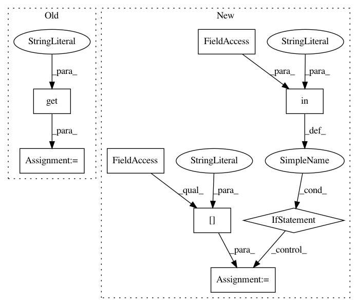

5c3de2518362675e14b15f87044742a94b816ef2,snntoolbox/simulation/target_simulators/loihi_target_sim.py,SNN,add_layer,#SNN#Any#,104
Before Change
// Convert weights to integers.
if len(layer.weights):
weights, biases = layer.get_weights()
num_weight_bits = eval(self.config.get(
"loihi", "connection_kwargs"))["numWeightBits"]
weights, biases = to_integer(weights, biases, num_weight_bits)
spike_layer.set_weights([weights, biases])
self._previous_layer_name = layer.name
After Change
weights, biases = layer.get_weights()
weights, biases = to_integer(weights, biases, self.num_weight_bits)
if "Flatten" in self._previous_layer_name:
pl = self.parsed_model.get_layer(self._previous_layer_name)
shape = pl.input_shape[1:]
permutation = np.ravel(np.reshape(
np.arange(int(np.prod(shape))), shape, "F"), "C")
weights = weights[permutation]
spike_layer.set_weights([weights, biases])
elif "AveragePooling" in get_type(layer):
weights, biases = spike_layer.get_weights()
In pattern: SUPERPATTERN
Frequency: 3
Non-data size: 8
Instances
Project Name: NeuromorphicProcessorProject/snn_toolbox
Commit Name: 5c3de2518362675e14b15f87044742a94b816ef2
Time: 2019-08-20
Author: bodo.rueckauer@intel.com
File Name: snntoolbox/simulation/target_simulators/loihi_target_sim.py
Class Name: SNN
Method Name: add_layer
Project Name: analysiscenter/batchflow
Commit Name: bdd2b2603416dc51a744c302eee371441dee3883
Time: 2017-04-18
Author: rhudor@gmail.com
File Name: dataset/pipeline.py
Class Name: Pipeline
Method Name: run
Project Name: apple/coremltools
Commit Name: d1e6e624ef891543c5bba32bb0a696d350714693
Time: 2019-08-20
Author: smq@apple.com
File Name: coremltools/converters/nnssa/coreml/ssa_converter.py
Class Name: SSAConverter
Method Name: _convert_reduction